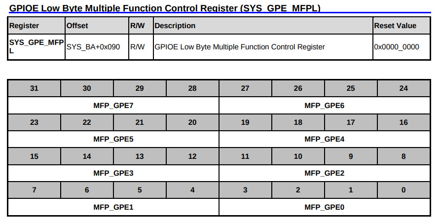
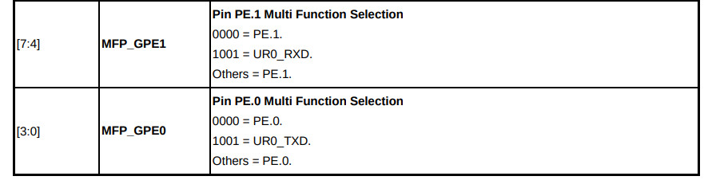
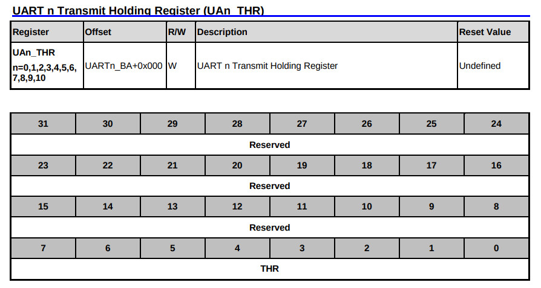
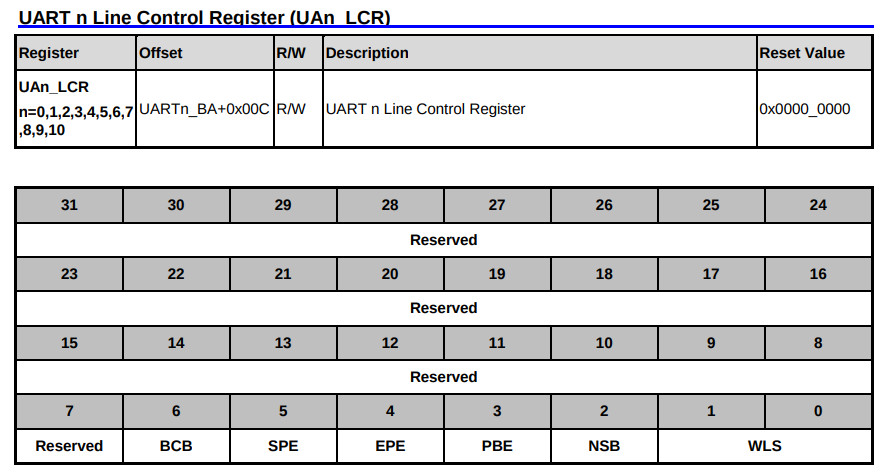
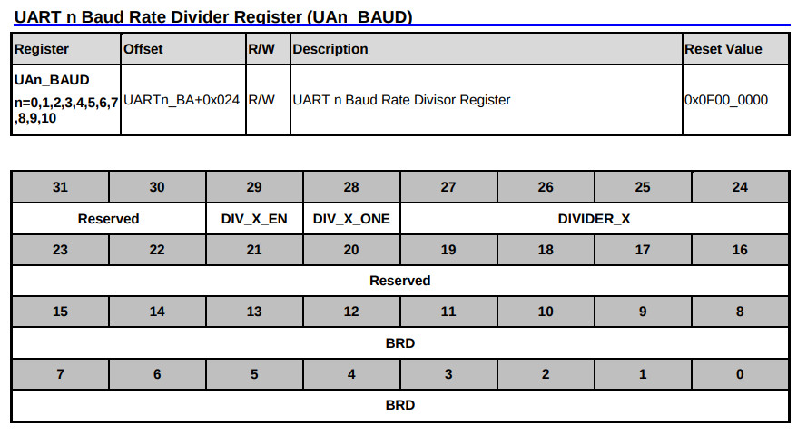

參考資訊：
https://github.com/OpenNuvoton/NUC970_NonOS_BSP
GPIO Alternative Function





.equ CLK_PCLKEN0, (0xb0000200 + 0x18)
.equ SYS_GPE_MFPL, (0xb0000000 + 0x90)
.equ UA0_THR, (0xb8000000 + 0x00)
.equ UA0_LCR, (0xb8000000 + 0x0c)
.equ UA0_BAUD, (0xb8000000 + 0x24)
.text
.align 2
.global _start
_start: b reset
_undef: b .
_swi: b .
_pabort: b .
_dabort: b .
_reserved: b .
_irq: b .
_fiq: b .
reset:
ldr r0, =CLK_PCLKEN0
ldr r1, [r0]
orr r1, #(1 << 16)
str r1, [r0]
ldr r0, =SYS_GPE_MFPL
ldr r1, [r0]
and r1, #0xfffffff0
orr r1, #0x00000009
str r1, [r0]
/* 115200bps */
ldr r0, =UA0_BAUD
ldr r1, =0x30000066
str r1, [r0]
loop:
ldr r0, =UA0_THR
ldr r1, =0x55
str r1, [r0]
ldr r4, =1000000
1:
subs r4, r4, #1
bne 1b
b loop
.end
完成